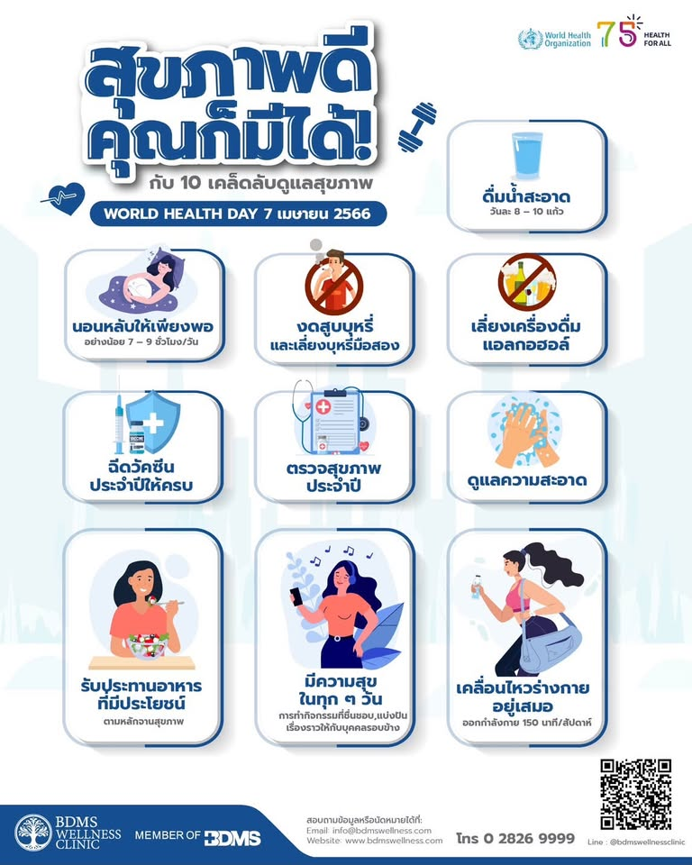

ความสำคัญของการดูแลสุขภาพ

การดูแลสุขภาพเป็นสิ่งสำคัญสำหรับทุกคน โดยเฉพาะวัยรุ่นที่เป็นช่วงวัยที่ร่างกายและจิตใจมีการเปลี่ยนแปลงอย่างรวดเร็ว การมีสุขภาพที่ดีจะช่วยให้ร่างกายแข็งแรง มีภูมิคุ้มกัน และสามารถใช้ชีวิตประจำวันได้อย่างมีประสิทธิภาพ นอกจากนี้ยังช่วยลดความเสี่ยงในการเกิดโรคต่าง ๆ และส่งผลดีต่อการเรียนและการใช้ชีวิตร่วมกับผู้อื่น